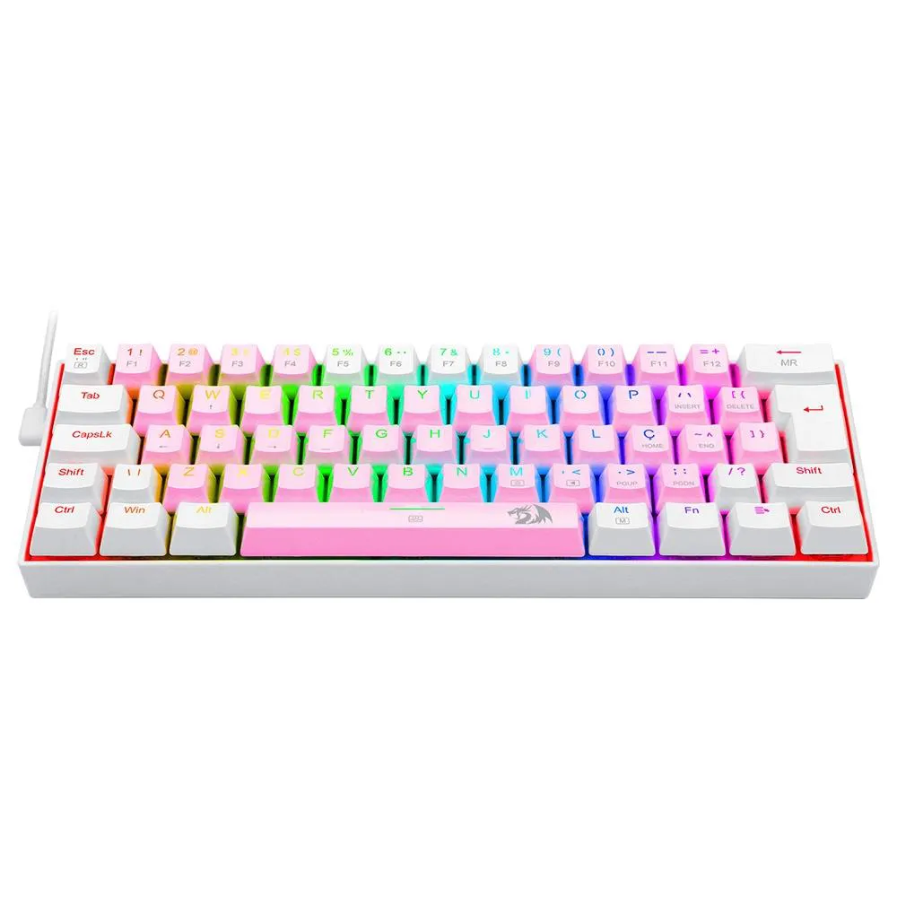
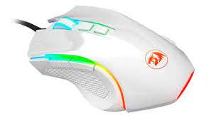

Perifericos Gamer

Características:
- Design Ergonômico
- Teclas para jogos de alto desempenho
- Keycaps super slim
Especificações:
Switches: Switches redragon low profiles
Acionamento: MECÂNICO
Hotswap DIY: SIM
Características:
- Preciso Sensor Pixart PAW3212 (7200 DPI / 10 G / 30 IPS)
- Polling Rate de 1000Hz (Tempo de Resposta Ajustável via Software de 1 / 2 / 4 / 8 ms)
- Iluminação RGB Redragon Chroma Mk.II para trazer mais brilho ao seu setup.
- Agora com a pintura exclusiva Lunar White para trazer ainda mais estilo para o seu setup.
- Botão para Troca de DPI "On-The-Fly" (4 Velocidades de DPI)
- 6 Botões programáveis para maior praticidade durante o uso.
- Compatível com Software para Ajuste Iluminação RGB e Configurações de Performance.
- Altamente indicado para Jogos Estilo MOBA.
- Pegada Ultra Confortável para usuários estilo Claw e Palm.
Especificações:
Sensor: Pixart PAW3212
DPI: 800 / 1200 / 1600 / 2400 / 7200 DPI
Polling Rate: Até 1000Hz
Botões Programáveis: 6
Shape: Ergonômico
Cor: Branco Lunar White
Design: Tradicional
Iluminação: RGB Redragon Chroma Mk.II
Software: Sim
Materiais: Plástico ABS
Conectividade: USB 2.0
Comprimento do cabo: 1.8m
Tipo de cabo: Revestido com Nylon trançado.
COR: Branco
Formato: TKL
Design: LOW PROFILE
Layout: ABNT2
Conectividade: WIRED
Software: SIM
Altura Ajustável: SIM
Materiais do case: ABS
Iluminação: RGB
Rollover: N - keys
Comprimento do cabo: 1.5m
Keycaps: DOUBLESHOT

Características:
- Preciso Sensor Pixart PAW3212 (7200 DPI / 10 G / 30 IPS)
- Polling Rate de 1000Hz (Tempo de Resposta Ajustável via Software de 1 / 2 / 4 / 8 ms)
- Iluminação RGB Redragon Chroma Mk.II para trazer mais brilho ao seu setup.
- Agora com a pintura exclusiva Lunar White para trazer ainda mais estilo para o seu setup.
- Botão para Troca de DPI "On-The-Fly" (4 Velocidades de DPI)
- 6 Botões programáveis para maior praticidade durante o uso.
- Compatível com Software para Ajuste Iluminação RGB e Configurações de Performance.
- Altamente indicado para Jogos Estilo MOBA.
- Pegada Ultra Confortável para usuários estilo Claw e Palm.
Especificações:
Sensor: Pixart PAW3212
DPI: 800 / 1200 / 1600 / 2400 / 7200 DPI
Polling Rate: Até 1000Hz
Botões Programáveis: 6
Shape: Ergonômico
Cor: Branco Lunar White
Design: Tradicional
Iluminação: RGB Redragon Chroma Mk.II
Software: Sim
Materiais: Plástico ABS
Conectividade: USB 2.0
Comprimento do cabo: 1.8m
Tipo de cabo: Revestido com Nylon trançado.